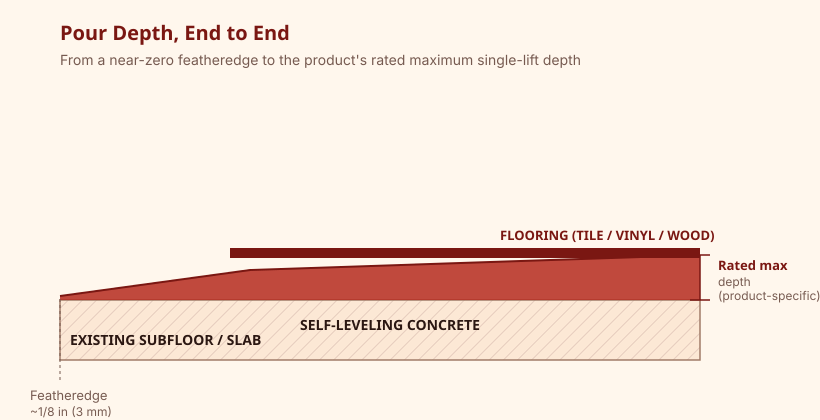

Most self-leveling underlayments are rated from about 1/8 in (3 mm) as a featheredge up to roughly 1–2 in (25–50 mm) per pour, with some products rated for deeper single pours. The exact range is product-specific and printed on the technical data sheet — pouring outside it risks cracking, slow cure, or poor bond.

Why Thickness Matters
Self-leveling compounds are formulated around a target depth range. Too thin and the material can't flow or self-level properly, leading to trowel marks and poor coverage. Too thick in a single pour and the compound can crack as it shrinks during cure, or take far longer to dry than expected — a problem when flooring is scheduled soon after.
Typical Depth Ranges
| Product type | Typical minimum | Typical maximum (single lift) |
|---|---|---|
| Standard leveling underlayment | 1/8 in (3 mm) featheredge | 1 in (25 mm) |
| High-build / patching-capable leveler | 1/4 in (6 mm) | 2 in (50 mm) |
| Deep-pour / structural-adjacent compound | 1/2 in (13 mm) | 4 in (100 mm) or more, product-dependent |

Pouring Thin (Featheredge)
A featheredge is the thin, tapering edge where the pour blends down to nearly zero thickness at the room's perimeter or transition point. Most self-levelers can feather to near zero, but very thin areas dry fastest and can be the first place hairline cracking or dusting shows up if the mix ratio was off.
Pouring Deep
When a low spot needs more depth than a single lift allows, manufacturers generally recommend either a higher-build product rated for that depth, or multiple lifts poured in sequence once each layer has cured enough to accept another pour. Pouring far beyond a product's rated depth in one lift is one of the most common causes of later cracking — see our cracking guide.
Checking Your Specific Product
Because rated depth varies not just by brand but by specific product line, always check the technical data sheet (TDS) for the exact bag you're using rather than relying on general figures like the ones above. The TDS will also specify whether multiple lifts are supported and how long to wait between them.
Frequently Asked Questions
Can I pour self-leveling concrete less than 1/8 inch thick?
Most products can feather to a near-zero edge, but a functional working thickness is usually at least 1/8 in for the material to flow and self-level correctly.
What happens if I pour too thick in one lift?
Depths beyond the product's rated maximum can shrink unevenly during cure, increasing the risk of cracking and significantly extending dry time before flooring can go down.
Do I need a different product for a deep low spot?
Often yes — a high-build or deep-pour formulation, or multiple lifts of a standard product, is the usual approach rather than exceeding one product's single-lift maximum.
Related Guides
Sources & References
- Manufacturer technical data sheets specifying minimum/maximum pour depth per product line